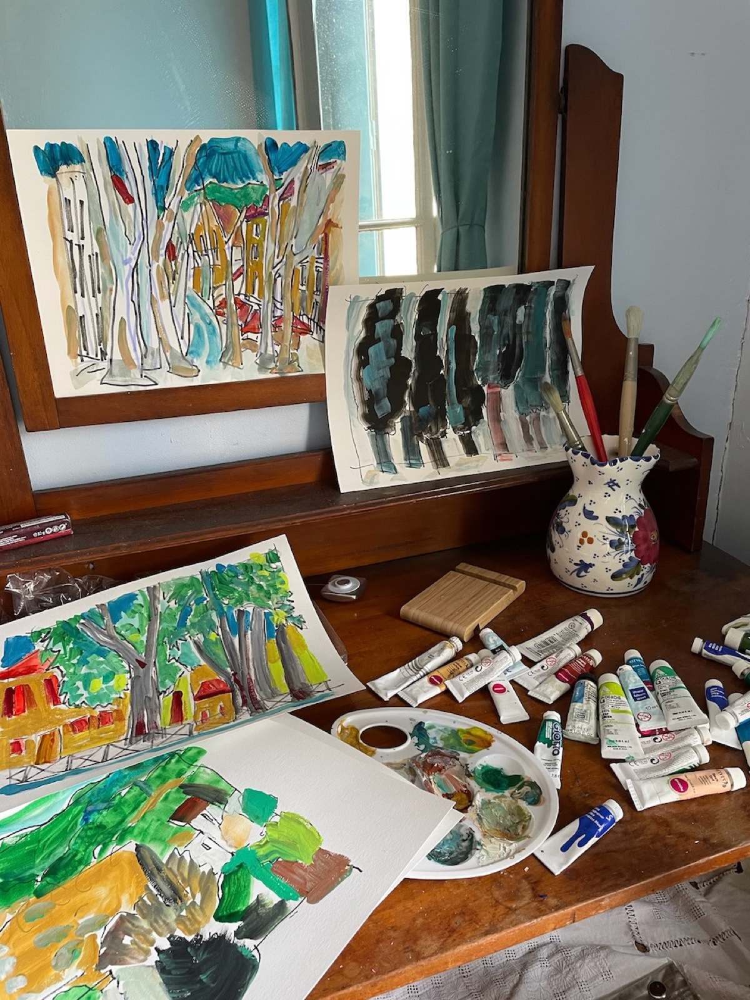

Nancy Eder
Nancy Eder paints landscapes in gouache and ink, on location. A sketchbook, a pen and a small tin of colour are enough to hold a place for an hour — long enough to notice how the roofs stack up a hillside, how the sea changes colour past the harbour wall, how a courgette leaf is really a dozen greens.
She has painted in Céret and the Roussillon since 2012, and has kept travelling sketchbooks through Spain, Portugal, Italy, England, Norway and Cuba. Each page is drawn directly in ink, without pencil first, then worked up in colour on the spot and captioned in her own hand — where it was, and when. Nothing is reworked later. Alongside the paintings she cuts linocuts, fills sketchbooks with pen-and-ink drawings, and — as she has since her Village years — makes pots.
She studied at Antioch College (BA) and New York University (MA), and came to painting full time after a working life of many parts: potter, art teacher, mediator for the Brooklyn courts, and an administrator at NYU. She showed her landscape work in Céret in August 2015, and divides her time between New York and the south of France.

Paula's Jardim
Porto, Portugal · July 2016
Ink and gouache on paper, 12 × 16 in
View this paintingA different painting appears here each time you visit.

The Village years
Nearly forty years at one address, on the edge of SoHo — the years that taught her how to look at a street.
In 1968 Nancy moved into 3 Washington Square Village — two bedrooms, two baths, $325 a month — and stayed for nearly four decades. She raised two sons there; from her windows she watched Picasso's Bust of Sylvette go up across the way.
Those years were spent making and teaching rather than exhibiting: throwing pots, teaching art, sitting as a mediator in the Brooklyn courts, and working as an administrator at New York University. The habit of looking hard at ordinary things — a shopfront, a curb, a tree in a courtyard — comes from there, and it is the same habit that fills the sketchbooks now.
She left the Village in 2007. The travelling sketchbooks began not long after.
Living in the Village was my dream come true.
What she misses: “the surprises — the possibilities around the corner, the treasures tossed and found on the street curbs.”
- 1968Moves to 3 Washington Square Village
- 1968–2007Potter, art teacher, court mediator, NYU administrator
- 2012First of the Céret sketchbooks
- Aug 2015Exhibition in Céret, France
- TodayPainting between New York and the south of France
Shipping, framing & returns
Shipping
Works on paper ship unframed, flat between archival boards in a rigid mailer. Pottery is wrapped and packed in a padded box. Everything is insured and tracked. Flat-rate shipping within the United States is $25; international shipping is quoted at checkout or on request. Orders are dispatched within 5 working days.
Framing & care
Paintings and drawings are on heavy sketchbook paper and sit well in a simple float mount behind UV-protective glass; standard sizes are listed on each work, so an off-the-shelf frame will usually do. The pottery is hand-built earthenware — decorative rather than oven- or dishwasher-proof, and best washed by hand.
Returns
If a painting isn't right in the room, return it in its original packaging within 14 days of delivery for a full refund of the purchase price. Please email first so we can look out for it.